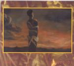

| Artist: | Kada |
| Title: | Búcsúzás/Farewell |
| Label: | Stereo Periferic BGCD 072-073 |
| Length(s): | 56+67 minutes |
| Year(s) of release: | 2001 |
| Month of review: | [06/2001] |
| 1) | Nergilí (part 1) | 1.18 |
| 3) | Farewell | 7.41 |
| 4) | Borelo | 12.43 |
| 6) | The Last Shirt (acoustic Version) | 1.58 |
| 8) | Intervention (part 2) | 3.21 |
Disc 2:
| 1) | Intervention Continued | 13.21 |
| 4) | The Source | 2.54 |
Only English titles, if available, have been given.
The Arabic presence stays on the title track, which opens fleetingly with sad subtle sax. Then the music becomes a bit more playful and groovy. However, the music continues to be rather soothing and smooth. Rather jazzy sound to this track and not really much happening here. A bit too freewheeling. Plenty of horns on this one.
On Borelo not much has changed: somewhat improvisational guitar playing (replacing the horns one might say) and we get a long slow variation on the Bolero. The music tends to ramble on (the way I also consider the Bolero to ramble on for a long time). Again, influences from the Middle-East abound in the melodies. Still, the music is not so much as what I would call progressive, but of a more jazzy, let's say ECM nature. The slow build-up of this track makes it very much like the real Bolero.
Symmetry Variation brings us to something akin to Space Groove's records, but with the addition of a trumpet. This means that the music is somewhat jazzy, but also somewhat spacey. The percussion continues to be rather loose, there is not really that much drumming here. After the trumpet has finished, the guitar takes over with a noisy meandering solo. Then the sax is allowed its slot progressing in similar fashion. Then the percussives are allowed to come to the fore, with only some Soundscapes in the back. At the end all instruments return with the guitar loud and angry.
The Last Shirt can also be found in a full version on the second disc, but here we find a short acoustic version of it. It moves right into the repetitive and Crimsonesque Intervention of which we find the first part at the end of this disc. The style is obviously the style of the Discipline period here. It does not however continue in the same fashion for over 13 minutes. We get some somber atmospherics, all a bit hazy and languorous. Quite soon after the neurotic KC like part returns, percolating. Some long spacey tones on the guitar then, followed by dissonant eruptions. Against this wild backdrop of guitar, the trumpet stubbornly plays in a most melodic and sad fashion. The trumpet wins out it seems, continuing its tragic melody. Later the sax takes over, a bit more playfully maybe, but without any noticeable beat or groove. After a short break the song continues with the second part on this disc, in a careful, almost frightful fashion. The musicians try to build something here, but it doesn't really grip me. Something is lacking.
The tones of Intervention Continued, the opener of the second disc, remind me directly of the end of the previous disc. Long hazy tones, sarting out in a somewhat Soundscapes like fashion. Quite a bit of "silence" in here, making me somewhat impatient. As such the track continues to evolve slowly, evoking a kind of jungle atmosphere with the instruments playing the role of animals, acting somewhat but not entirely free of eachother. After about nine minutes a kind of flow evolves adn we come then to a faster rocky passage in which the guitar plays noisily in the back with trumpet playing over it in repetitive fashion. The song winds down slowly, but not as slowly as it wound up.
Island, Thursday is the first of two live tracks. It is a rather groovy track that I found myself drumming along with. Folk Music is not typically folk music, at least not to me. Some noisy industrial guitars, a freewheeling horn section meander on this track. A bit discordant.
A short interlude is The Source with its dark foreboding sounds. Long eerie tones for the most part. The second and final live track is Island, Saturday. This track offers more of what I have already described: slow build-up, an eerie jumble of sounds, a bit of tenseness here, a quite a bit of chaos halfway.
The final track is the full version of The Last Shirt. It opens with the Levinsh tones that the acoustic version also started with. A bit of an eerie track, but similar in style to the others.